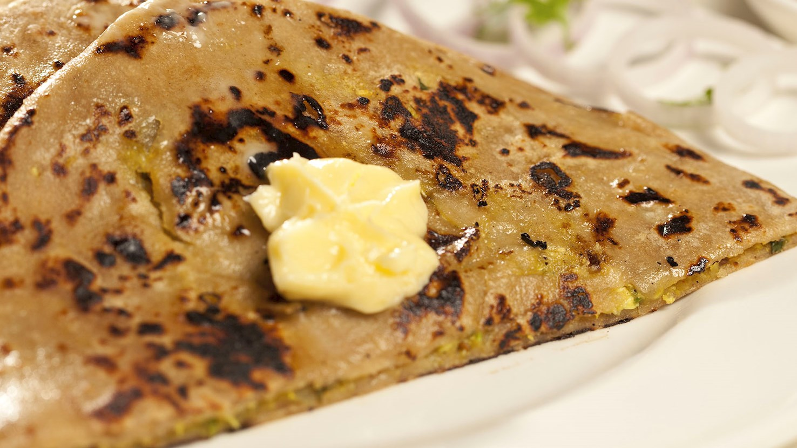

Home
Paratha

Description
Golden-brown in color, flaky and layered, paratha is a type of Indian bread that is typically consumed for breakfast. The name comes from a combination of words parat and atta (flour), referring to the cooked, layered dough. It consists of whole wheat flour that is baked in ghee (Indian clarified butter) and comes in round, triangular, square, or heptagonal shapes. Parathas are often stuffed with ingredients such as boiled potatoes, cauliflower, garlic, ginger, chili, paneer, or radish. They are sometimes accompanied by pickles, yogurt, homemade chutneys, or meat and vegetable curries. In Punjab, paratha is traditionally paired with lassi, a popular yogurt-based drink. Although the flatbread originated in Peshawar, Pakistan, it has spread throughout India where it can be found at numerous street stands and roadside eateries. The southern Indian version is called parotta. Another way of eating paratha is to roll it into a pipe and dip it into tea. Versatile, buttery, and aromatic - parathas are irresistible in the morning, and that just may be the key to their popularity.
Ingredients
- 1 to 3.5 cups (finely milled whole wheat flour gives it a soft chew and nutty flavor)
- About 1/2 to 1.3 cups of warm water (adjusted for dough consistency)
- 1/2 to 1 teaspoon (to taste)
- 1/2 to 1 tablespoon of melted ghee or vegetable oil mixed into the dough for extra softness
Steps
- Combine the whole wheat flour and salt in a large mixing bowl, rubbing in a splash of oil or ghee if using.
- Add warm water gradually, kneading for about 5 minutes until the dough becomes smooth, soft, and pliable.
- Coat the dough ball lightly with oil, cover it with a damp cloth, and let it rest for 20 to 30 minutes.
- Split the rested dough into equal, golf-ball-sized portions and roll them smoothly between your palms.
- Dust your work surface with dry flour and roll one dough ball out into a large, thin circle.
- Spread a thin layer of melted ghee or oil across the surface, then lightly sprinkle a pinch of dry flour on top.
- Fold the circle back and forth from one edge to the other like a paper accordion fan to create a long pleated strip.
- Roll the pleated strip inward into a tight cinnamon-roll spiral, tucking the loose end firmly underneath.
- Dust the spiral coil with flour and gently roll it back out into a 6-to-7-inch disc, using light pressure to protect the layers.
- Place the paratha onto a hot, dry griddle or skillet over medium-high heat for 1 to 2 minutes until small bubbles appear, then flip.
- Drizzle ghee or oil on both sides, flipping a couple of times and pressing gently with a spatula until crisp and golden-brown.
- Remove the hot paratha from the pan and immediately scrunch or clap it gently from the sides between your palms to open up the flaky layers.